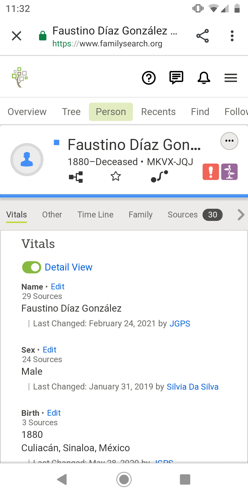

BYU Idaho's webpsite is a great example of alignment. All of their content matches up perfectly which creates a sense of unity between content. It is organized and provides a simple path for viewers to follow as they scan the page. Notice that they place important information at the top and work their way down the page.
The contrast shown in the example above is not only aesthetically pleasing but it brings meaning to the content. The color variety allows the text to stand out and provides a natural seperation between different pieces of information. For example, this wepages uses different colors and font sizing.
https://www.familysearch.org/en/
Proximity provides a visual clue about the relationship between different peices of information. FamilySearch does a great job of grouping relevant data together. For example, they supply a navigation bar for their website links and another one for an individual's profile page links. This helps to simplify the user experience.